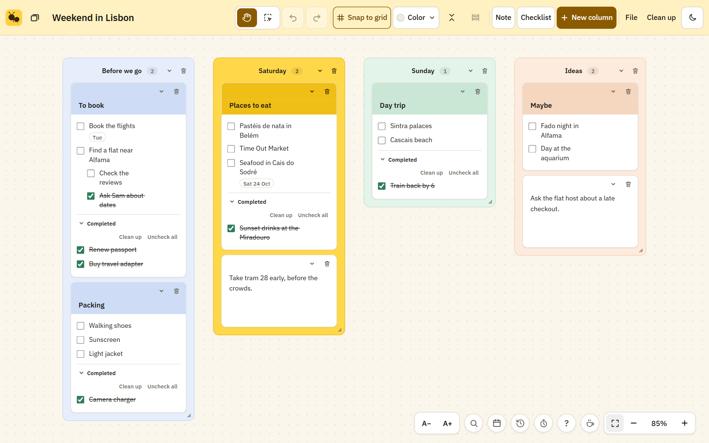

BusyAnts
A calm, free visual board for notes and checklists. Plan together in real time.
Start your board, freeWhy I made BusyAnts
I wake up most mornings feeling like an ant: a long line of small jobs, and a real need to see them get done.
I've tried Milanote, Evernote, Notion, Miro, Google Keep, Windows Sticky Notes and Todoist. Each did part of it. Some were too rigid to shape the way I think, some slowed down once a board got big, and most were built around loose notes, when what I actually live in is checklists.
So I built the board I wanted: a calm canvas centered on checklists, with structure when I need it and room to move things around when I don't. Tick something off and it slides into Completed, so at the end of the day there's a record of what got done.
-
Shape it your way
Columns, colors, boards inside boards, five typefaces, snap-to-grid or free placement. Lay it out however your head works.
-
Fold away what you're not doing
Collapse any card, column or list, or everything at once, and bring it back in one click.
-
Built for checklists
Nested sub-items, due dates, a Due list, tick with Ctrl+Enter, and one-click Clean up of everything you've finished.

Also in BusyAnts
- Free, with no card or board limits
- Share a board by link and edit together in real time
- Works offline and installs like an app on computer and phone
- Version history to bring back any earlier version, plus full backups
- Import from Milanote, Notion, Obsidian, Evernote, Google Keep, Trello, web pages and PDFs (how)
- Find anything on a board, keyboard shortcuts for everything (press ?), and a focus timer
- Google Calendar beside your board, to see and edit your week
- Dark mode, and a layout made for phones
- 24 column colors, including 8 bold ones, with Auto-color